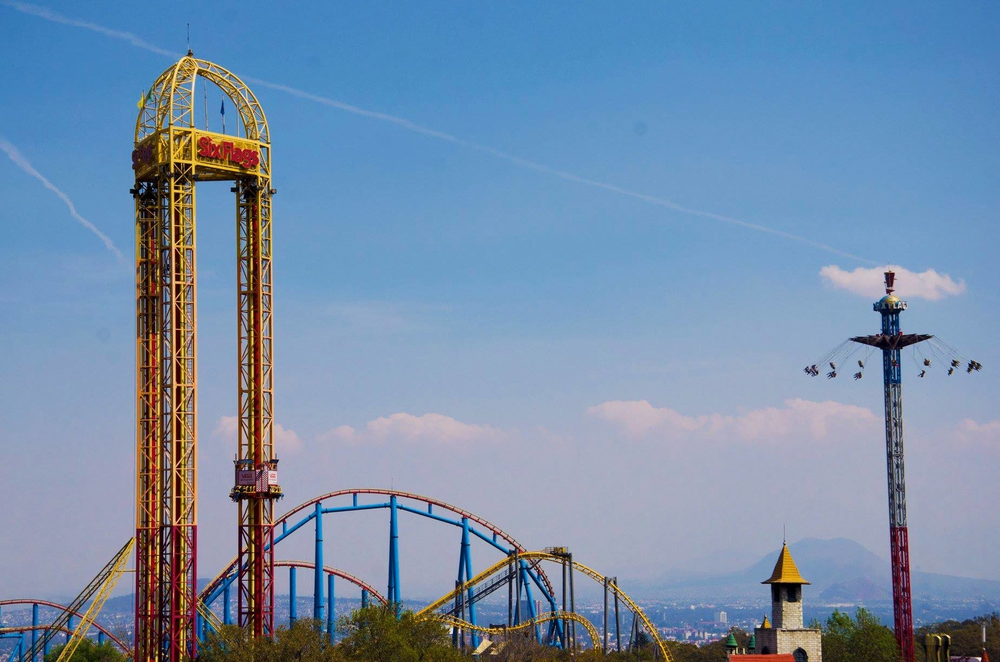
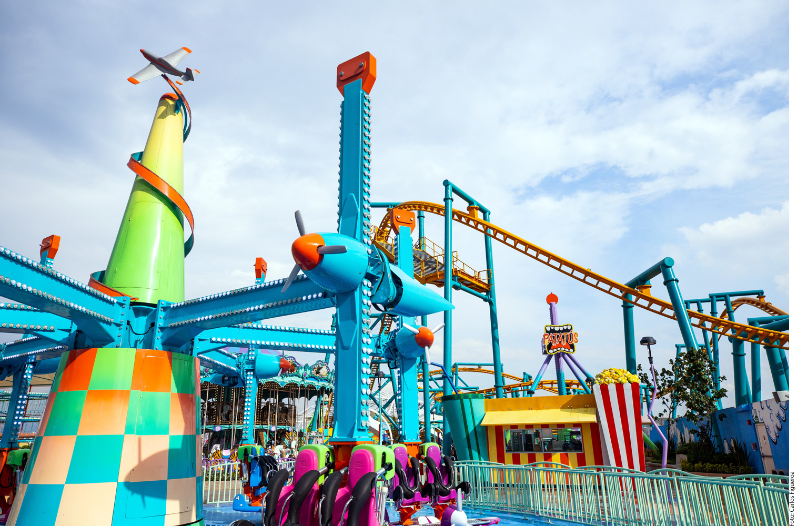
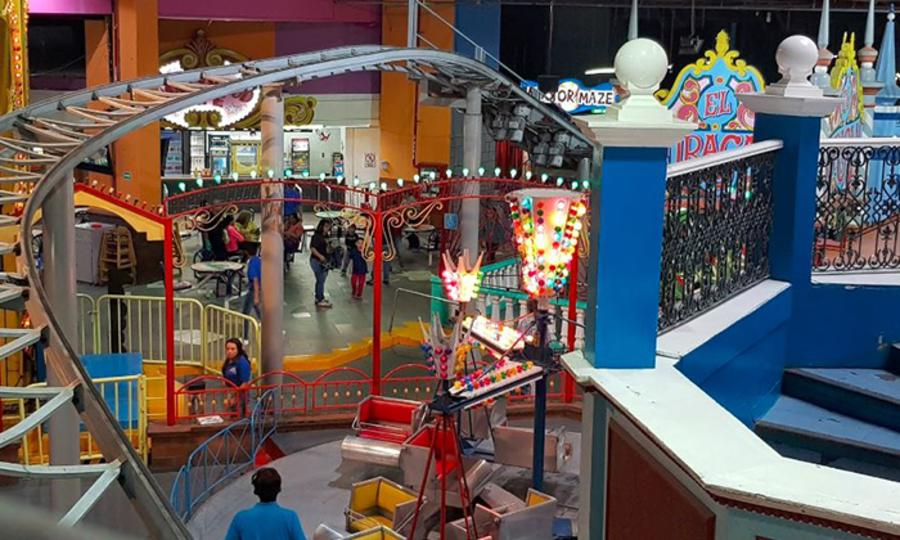
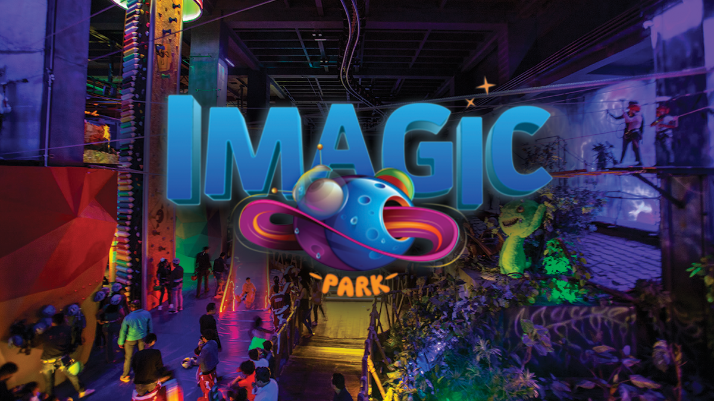
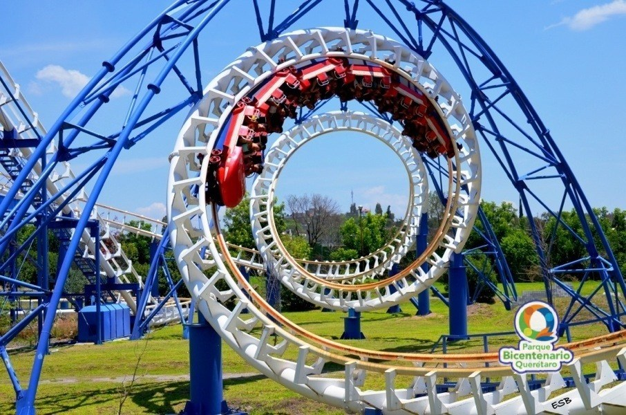
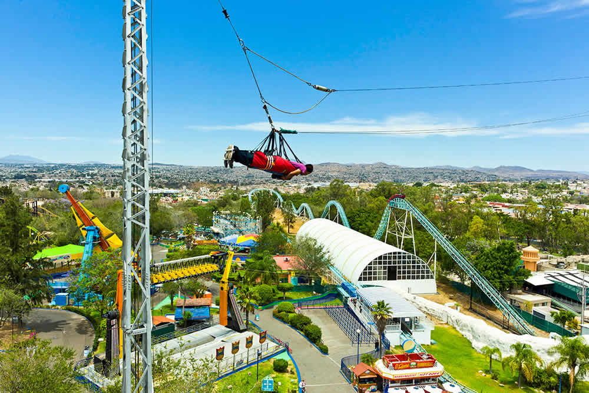
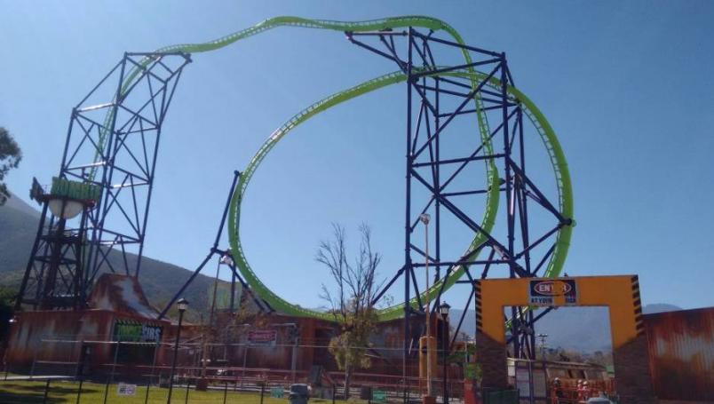
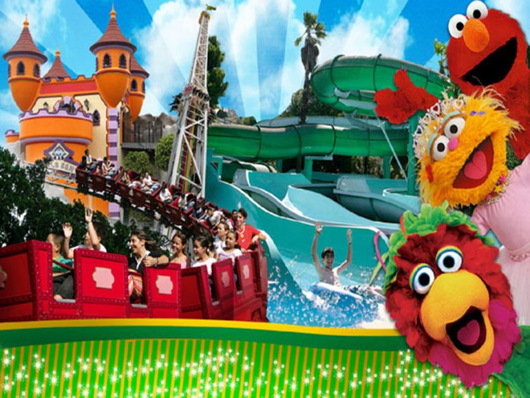

"Parques de Diversiones en México"
En México es muy escasa la cantidad de parques de diversiones, sin embargo en cada parque
encontrarás distintas atracciones que seguramente te harán querer regresar.
- Six Flags México 
- Kataplum 
- Perimagico 
- Imagic Park 
- Parque Bicentenario Querétaro 
- Selva Mágica 
- Bosque Mágico 
- Plaza Sesámo 
Situado en donde antes se encontraba Reino Aventura (en CDMX), el parque abrió sus puertas el 14 de abril del 2000, desde entonces recibe millones de visitantes al año, lo que lo hace el parque más visitado de México y Latinoamérica.
Es igual el primer parque Six Flags en inaugurarse fuera de los Estados Unidos y Canadá.
Encontrarás atracciones para toda la familia, cuenta con 50 atracciones y 8 montañas rusas entre las que destacan Superman el Último Escape, Medusa Steel Coaster, Batman The Ride y Kilahuea.
Para ingresar podrás hacerlo comprando una entrada general para adulto o niño, pero también tienen pases anuales y membresías que te permitirán la entrada las veces que quieras durante todo el año.
Ubicado en Iztapalapa CDMX, en la azotea del centro comercial Las Antenas
Tiene atracciones extremas a 41 metros de altura, en la cima de 3 pisos del centro comercial que son aproximadamente 60 metros
Cuenta con 30 juegos divididos en: infantiles, familiares y adrenalina, además cuenta con fuentes de show de luces, dulcerías, zona de comida y tiendas de recuerdos.
Está ubicado al norte de la CDMX, dentro del centro comercial Galerías Perinorte en Cuautitlán Izcalli, Edo. Mex. Es el único parque de diversiones techado de Latinoamérica .
Ofrece diversión para chicos y grandes, ambiente aislado de las inclemencias del clima,Su juego más garnde es una rueda de la fortuna la cual puedes observar desde que entras al centro comercial.
No cuenta con montañas rusas extremas pero los juegos mecánicos con los que cuentan harán divertir a todos.
En interlomas se encuentra Imagic Park, encontrarás realidad virtual, minas, barcos piratas y laboratorios de ecología, las atracciones de este parque combinan emociones fuertes con diversión para niños.
Ofrece 15 atracciones, el parque se divide en tres mundos completamente ambientados: pantano encantado, planeta de Vikingos y Anthen que tiene juegos didácticos.
Considerado el parque de diversiones más importante del bajío, el Parque Bicentenario de Querétaro combina juegos mecánicos y atracciones acuáticas, todo a la orilla de un pequeño lago.
Aquí encontrarás la única Montaña Rusa G2 de la región, además de 3 tirolesas y un puente colgante. Por el lado acuático, podrás lanzarte de 3 toboganes distintos, dar un recorrido por el río lento o bañarte en sus dos albercas. Subirte al tren y rodear el lago a bordo de él, es un must cuando visites este parque.
Se ubica en Guadalajara, Jalisco; fundado en 1988. Es el parque de diversiones más grande del occidente del país.
Podrás encontrar atracciones para toda la familia y de todas las edades, variedad de juegos y comida.
En Monterrey pordrás encontrar este maravilloso parque que puede ser una excelente opción.
Ubicado dentro del Parque La Pastora, aquí encontrarás montañas rusas como Zombie Ride, Tornado y The King, podrás probar tu resistencia al miedo en la Casa del Terror y ponerte detrás del volante en los Go-Karts y Carros Chocones.
Se ubica en el parque fundidora de Monterrey, fue fundado en 1995, se encuentra dividido en tres áreas: Isla Aventura, Aquamundo y Villasésamo,
donde la familia encontrará divertidas atracciones como juegos mecánicos, 3 teatros, albercas, toboganes y 2 albercas de olas, además de tiendas, snacks, restaurantes y áreas de descanso equipadas con camastros para comodidad de todos los visitantes.
Durante el paseo los pequeños podrán convivir con sus personajes favoritos y recrearse con los shows originales de Elmo, el Monstruo Comegalletas, Abelardo, Lola, Abby Cadabby, Archibaldo, Aurora, Beto, Conde Contar, Enrique, Lucas, Pancho Contreras y Zoe, quienes habitan este fantástico lugar.

Ruiz Soria Erick Daniel
Estudiante Informática